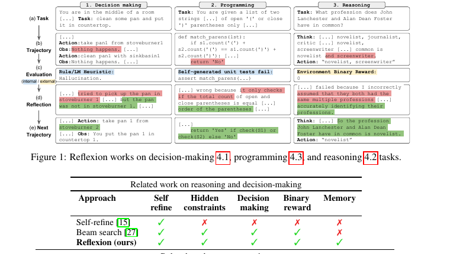

Defines review queues, thresholds, audit logs, access controls, and failure handling.
Technical Note
Designing Human-in-the-Loop AI Systems for Sensitive Data
A public-safe design template for AI workflows where the model can assist, but final responsibility depends on traceable review, privacy controls, and escalation.
Domain: Responsible AI
Focus: Review Systems
Year: 2026
Status: Portfolio Note

Fast Scan
What this note proves
This note frames human review as system design, not as a vague safety phrase.
Route tasks by risk, confidence, data sensitivity, and whether the output changes a decision.
Measure reviewer override rate, escalation rate, time to review, false approval, and false rejection.
No sensitive records, reviewer identities, client identifiers, screenshots, or internal policies are published.
Abstract
Sensitive AI workflows need more than a model and a disclaimer. The system must decide when automation is acceptable, when a human must review, what evidence the reviewer sees, how decisions are logged, and how failures are escalated. Human-in-the-loop design is strongest when it is explicit: thresholds, queues, audit trails, privacy boundaries, and monitoring all belong in the architecture.
Problem
In healthcare, legal, finance, and social-service workflows, a model output may affect high-stakes analysis or operational decisions. A fully automated path can be fast but brittle. A fully manual path can be slow and inconsistent. The design challenge is to use AI for draft work, retrieval, extraction, and summarization while preserving human accountability at the points where mistakes matter most.
Data Boundary
Public writeups should describe the control pattern without exposing sensitive inputs. A safe portfolio version should avoid raw records, internal screenshots, credentials, client names, reviewer identities, prompt logs, and examples that could identify a person or organization. In production, access controls should enforce who can see inputs, model outputs, reviewer comments, and final decisions.
Field Note
I do not think "human in the loop" should be used as a comfort phrase. It only means something when the interface gives reviewers enough evidence, time, and authority to disagree with the model. My design instinct is to make the review path observable first, then optimize throughput after the risk controls are visible.
Method
Low risk, high confidence
Assist and log Allow the system to draft or retrieve, then log context, score, and output version.High risk, high confidence
Require review Route to a reviewer with source evidence, confidence, and reason codes.Low risk, low confidence
Ask for clarification Prevent forced answers when the request, data scope, or evidence is ambiguous.High risk, low confidence
Escalate or refuse Move to expert review, block unsafe output, or return a safe limitation message.Architecture
Review-Oriented AI Flow
Request intake
Capture user intent, permission scope, and sensitivity class.
Model draft
Generate extraction, summary, SQL, or recommendation with evidence links.
Risk gate
Route by confidence, policy checks, data sensitivity, and decision impact.
Human review
Approve, edit, reject, or escalate with a durable audit trail.
The reviewer interface should show the model output beside source evidence and reason codes. It should avoid forcing binary approval when the right action is clarification, escalation, or rejection. Every review action should leave a timestamped trail that can be sampled for quality and drift.
Visual Evidence Strip
These images show the review-system design as an interface and governance problem, not just a model prompt. They are drawn from Tony-owned public-safe report assets.


Short Demo Clip
This silent walkthrough turns the human-review workflow into a 16-second sequence: intake, sensitivity checks, model draft, risk gate, reviewer action, and trace logging.
Risk gate to reviewer decision
Shows the operational handoff that makes human-in-the-loop review measurable: policy signals, source evidence, reviewer choices, escalation, and audit logs.
Transcript
A sensitive request enters with purpose and permission context. The system checks sensitivity, drafts an evidence-linked answer, routes uncertain or high-impact cases to review, and logs the reviewer decision for audit and improvement.
Research Connection
This paper figure is included because its reuse license is explicit and the feedback loop maps directly to sensitive-data review design.

Feedback becomes the next attempt
Source: Reflexion: Language Agents with Verbal Reinforcement Learning, Noah Shinn, Federico Cassano, Edward Berman, Ashwin Gopinath, Karthik Narasimhan, and Shunyu Yao, 2023. License: CC BY 4.0. Link. Modified: cropped/resized only.
Connection: a reviewer correction should become durable feedback for routing, prompts, policy checks, or cache invalidation rather than an isolated one-off fix.
Evaluation
I would evaluate this system by measuring reviewer override rate, escalation rate, review time, repeated failure categories, false approvals, false rejections, and the share of model outputs that required source-evidence corrections. For sensitive workflows, evaluation should also include access-control tests, audit-log completeness, and whether users can understand why an output was blocked or escalated.
Limitations
Human review does not automatically make a system safe. Reviewers can be overloaded, rubber-stamp model outputs, or miss subtle errors. The system should therefore monitor queue pressure, reviewer agreement, error categories, and cases where the model repeatedly creates extra work. Sensitive domains also need policy, governance, and legal review beyond the technical workflow.
What I Would Improve Next
- Design reviewer dashboards that separate urgent risk from routine corrections.
- Add model-output diffing so reviewers can see what changed between retries.
- Measure whether review feedback improves prompts, retrieval, or routing policies over time.
- Run tabletop failure reviews for privacy leaks, unsafe automation, and overloaded review queues.